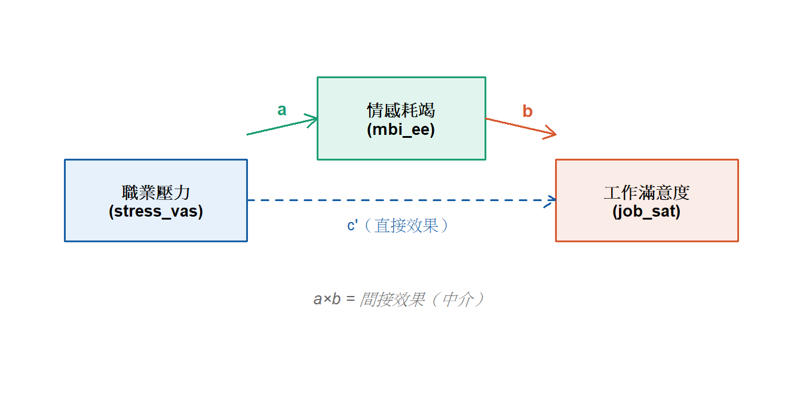
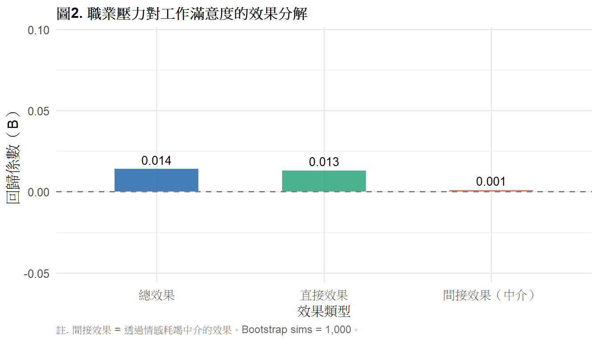

library(tidyverse)
library(gt)
library(mediation)
# install.packages("mediation")
ems <- read.csv("data/ems_main.csv",
fileEncoding = "UTF-8",
stringsAsFactors = FALSE)
ems$gender <- factor(ems$gender,
levels = c("男", "女"))
ems$level <- factor(ems$level,
levels = c("EMT-1", "EMT-2", "EMT-P"))
ems$district <- factor(ems$district,
levels = c("北部", "中部", "南部", "東部"))
ems$shift <- factor(ems$shift,
levels = c("日班為主", "夜班為主", "輪班"))第11週：干擾與中介分析
Confounding、Mediation、Baron-Kenny、Bootstrap、APA 報告
本週學習目標
- 理解干擾因子與中介變項的概念差異
- 執行分層分析偵測干擾效果
- 執行 Baron-Kenny 四步驟中介分析
- 用 Bootstrap 法計算間接效果的信賴區間
統計方法對照表（本週位置）
| 情境 | 概念 | 方法 |
|---|---|---|
| 第三變項扭曲 X-Y 關係 | 干擾（Confounding） | 分層分析、多元回歸調整 |
| 第三變項傳遞 X-Y 關係 | 中介（Mediation） | Baron-Kenny、Bootstrap |
註釋
干擾與中介是研究設計與因果推論的核心概念。 這兩個概念在統計上的處理方式截然不同， 但初學者很容易混淆——本週的重點就是把這個區別講清楚。
一、統計理論
1.1 干擾因子（Confounder）
干擾因子是同時影響 X 和 Y 的第三變項， 它會讓 X-Y 之間的關聯看起來比實際更強（或更弱）， 甚至產生虛假關聯。
C（干擾因子）
↙ ↘
X →?→ YEMS 例子： 觀察到「年資長的 EMS 人員情感耗竭較低」。 但年資長的人通常職級較高（EMT-P）， 工作自主性更大——職級可能是干擾因子。
偵測干擾的邏輯：
- 計算 X-Y 的原始相關（粗估）
- 控制 C 後，重新計算 X-Y 的關聯（調整後估計）
- 如果兩者差異 > 10%，C 可能是干擾因子
處理方式： - 分層分析（Stratified Analysis） - 多元回歸（把 C 納入模型） - 配對設計（研究設計層面）
1.2 中介變項（Mediator）
中介變項是傳遞 X 對 Y 影響的機制變項， 它解釋了「為什麼 X 會影響 Y」。
X → M（中介變項） → Y
↘________________________↗
直接效果（c'）效果分解：
\[\text{總效果（c）} = \text{直接效果（c'）} + \text{間接效果（a × b）}\]
- 間接效果（a × b）：X 透過 M 影響 Y 的部分
- 直接效果（c’）：排除 M 後，X 直接影響 Y 的部分
EMS 例子： 職業壓力（X）→ 情感耗竭（M）→ 工作滿意度（Y）
職業壓力影響工作滿意度的機制， 可能是透過情感耗竭（中介）來傳遞。
1.3 干擾 vs 中介：核心差異
| 干擾（Confounder） | 中介（Mediator） | |
|---|---|---|
| 與 X 的關係 | 原因（C → X） | 結果（X → M） |
| 與 Y 的關係 | 原因（C → Y） | 原因（M → Y） |
| 時間順序 | C 早於 X、Y | X 早於 M 早於 Y |
| 研究目的 | 排除虛假關聯 | 了解機制路徑 |
| 處理方式 | 控制（納入模型） | 分解（路徑分析） |
1.4 Baron-Kenny 四步驟中介分析
Step 1： X → Y 顯著（總效果 c 顯著） \[Y = \beta_0 + c \cdot X\]
Step 2： X → M 顯著（路徑 a 顯著） \[M = \beta_0 + a \cdot X\]
Step 3： M → Y 顯著（控制 X 後）（路徑 b 顯著） \[Y = \beta_0 + c' \cdot X + b \cdot M\]
Step 4： 判斷中介類型 - 完全中介：Step 3 中 c’ 不顯著 - 部分中介：Step 3 中 c’ 仍顯著但變小
重要
Baron-Kenny 的限制： 傳統的四步驟法只看係數是否顯著， 但間接效果（a × b）本身需要用 Bootstrap 法來計算信賴區間， 這才是目前的學術標準。
1.5 Bootstrap 法計算間接效果
間接效果 = a × b，但 a × b 的抽樣分布不是常態， 不能直接用 Z 檢定。
Bootstrap 法： 1. 從原始資料重複抽樣 1000–5000 次 2. 每次計算 a × b 3. 用這些 a × b 的分布建構 95% CI 4. CI 不含 0 → 間接效果顯著
# 使用 mediation 套件
library(mediation)
model.m <- lm(M ~ X, data = df)
model.y <- lm(Y ~ X + M, data = df)
med_result <- mediate(model.m, model.y,
treat = "X", mediator = "M",
boot = TRUE, sims = 1000)二、分析流程
干擾分析：
Step 1：計算 X-Y 粗估關聯
↓
Step 2：加入可疑干擾因子 C，重新估計
↓
Step 3：比較調整前後的係數變化（> 10% 為干擾）
中介分析：
Step 1：X → Y（總效果）
↓
Step 2：X → M（路徑 a）
↓
Step 3：X + M → Y（路徑 b 和 c'）
↓
Step 4：Bootstrap 計算間接效果 CI
↓
Step 5：判斷完全或部分中介三、R 實作
載入套件與資料
干擾分析
研究問題： 夜班次數（X）對情感耗竭（Y）的影響， 是否受到年資（C）干擾？
表1. 干擾分析：調整前後比較
# 粗估（未調整）
crude_model <- lm(mbi_ee ~ night_shifts, data = ems)
crude_sum <- summary(crude_model)
# 調整後（控制年資）
adj_model <- lm(mbi_ee ~ night_shifts + years, data = ems)
adj_sum <- summary(adj_model)
crude_b <- coef(crude_model)["night_shifts"]
adj_b <- coef(adj_model)["night_shifts"]
pct_change <- abs((crude_b - adj_b) / crude_b) * 100
data.frame(
模型 = c("粗估（未調整）", "調整後（控制年資）"),
B = round(c(crude_b, adj_b), 4),
SE = round(c(
crude_sum$coefficients["night_shifts", "Std. Error"],
adj_sum$coefficients["night_shifts", "Std. Error"]
), 4),
p = c(
ifelse(crude_sum$coefficients["night_shifts", "Pr(>|t|)"] < .001,
"< .001",
round(crude_sum$coefficients["night_shifts", "Pr(>|t|)"], 3)),
ifelse(adj_sum$coefficients["night_shifts", "Pr(>|t|)"] < .001,
"< .001",
round(adj_sum$coefficients["night_shifts", "Pr(>|t|)"], 3))
),
變化百分比 = c(NA, paste0(round(pct_change, 1), "%"))
) |>
gt() |>
tab_header(
title = "表1. 干擾分析：夜班次數對情感耗竭的影響（調整前後比較）"
) |>
tab_source_note(
source_note = paste0(
"註. B = 非標準化回歸係數；SE = 標準誤。",
"變化百分比 > 10% 提示年資可能為干擾因子。N = 200。"
)
) |>
cols_align(align = "center",
columns = c(B, SE, p, 變化百分比)) |>
cols_align(align = "left", columns = 模型) |>
tab_style(
style = cell_text(weight = "bold"),
locations = cells_column_labels()
) |>
sub_missing(missing_text = "") |>
tab_options(
table.border.top.style = "hidden",
heading.border.bottom.style = "solid",
column_labels.border.top.style = "solid",
column_labels.border.bottom.style = "solid",
table.border.bottom.style = "solid",
table.font.size = px(13),
heading.title.font.size = px(14),
heading.align = "left"
)| 表1. 干擾分析：夜班次數對情感耗竭的影響（調整前後比較） | ||||
| 模型 | B | SE | p | 變化百分比 |
|---|---|---|---|---|
| 粗估（未調整） | -0.0106 | 0.0126 | 0.402 | |
| 調整後（控制年資） | -0.0101 | 0.0127 | 0.427 | 4.6% |
| 註. B = 非標準化回歸係數；SE = 標準誤。變化百分比 > 10% 提示年資可能為干擾因子。N = 200。 | ||||
中介分析
研究問題： 職業壓力（X = stress_vas）對工作滿意度（Y = job_sat）的影響， 是否透過情感耗竭（M = mbi_ee）中介？
圖1. 中介模型路徑圖
par(mar = c(1, 1, 1, 1))
plot(0, 0, type = "n", xlim = c(0, 10),
ylim = c(0, 4), axes = FALSE, xlab = "", ylab = "")
rect(0.2, 1.5, 2.8, 2.5, col = "#E6F1FB",
border = "#185FA5", lwd = 1.5)
rect(3.8, 2.5, 6.2, 3.5, col = "#E1F5EE",
border = "#1D9E75", lwd = 1.5)
rect(7.2, 1.5, 9.8, 2.5, col = "#FAECE7",
border = "#D85A30", lwd = 1.5)
text(1.5, 2.0, "職業壓力\n(stress_vas)",
cex = 0.85, font = 2)
text(5.0, 3.0, "情感耗竭\n(mbi_ee)",
cex = 0.85, font = 2)
text(8.5, 2.0, "工作滿意度\n(job_sat)",
cex = 0.85, font = 2)
arrows(2.8, 2.8, 3.8, 3.0, lwd = 1.5,
col = "#1D9E75", length = 0.12)
arrows(6.2, 3.0, 7.2, 2.8, lwd = 1.5,
col = "#D85A30", length = 0.12)
arrows(2.8, 2.0, 7.2, 2.0, lwd = 1.5,
col = "#185FA5", length = 0.12, lty = 2)
text(3.3, 3.1, "a", cex = 0.9,
col = "#1D9E75", font = 2)
text(6.8, 3.1, "b", cex = 0.9,
col = "#D85A30", font = 2)
text(5.0, 1.7, "c'（直接效果）",
cex = 0.8, col = "#185FA5")
text(5.0, 0.8, "a×b = 間接效果（中介）",
cex = 0.85, col = "gray40", font = 3)
表2. Baron-Kenny 四步驟結果
# Step 1: X → Y（總效果）
step1 <- lm(job_sat ~ stress_vas, data = ems)
s1 <- summary(step1)
# Step 2: X → M（路徑 a）
step2 <- lm(mbi_ee ~ stress_vas, data = ems)
s2 <- summary(step2)
# Step 3: X + M → Y（路徑 b 和 c'）
step3 <- lm(job_sat ~ stress_vas + mbi_ee, data = ems)
s3 <- summary(step3)
data.frame(
步驟 = c("Step 1：X → Y（總效果 c）",
"Step 2：X → M（路徑 a）",
"Step 3a：X → Y｜M（直接效果 c'）",
"Step 3b：M → Y｜X（路徑 b）"),
B = round(c(
coef(step1)["stress_vas"],
coef(step2)["stress_vas"],
coef(step3)["stress_vas"],
coef(step3)["mbi_ee"]
), 3),
SE = round(c(
s1$coefficients["stress_vas", "Std. Error"],
s2$coefficients["stress_vas", "Std. Error"],
s3$coefficients["stress_vas", "Std. Error"],
s3$coefficients["mbi_ee", "Std. Error"]
), 3),
t = round(c(
s1$coefficients["stress_vas", "t value"],
s2$coefficients["stress_vas", "t value"],
s3$coefficients["stress_vas", "t value"],
s3$coefficients["mbi_ee", "t value"]
), 3),
p = c(
ifelse(s1$coefficients["stress_vas","Pr(>|t|)"] < .001,
"< .001", round(s1$coefficients["stress_vas","Pr(>|t|)"],3)),
ifelse(s2$coefficients["stress_vas","Pr(>|t|)"] < .001,
"< .001", round(s2$coefficients["stress_vas","Pr(>|t|)"],3)),
ifelse(s3$coefficients["stress_vas","Pr(>|t|)"] < .001,
"< .001", round(s3$coefficients["stress_vas","Pr(>|t|)"],3)),
ifelse(s3$coefficients["mbi_ee","Pr(>|t|)"] < .001,
"< .001", round(s3$coefficients["mbi_ee","Pr(>|t|)"],3))
),
顯著 = c("✓","✓",
ifelse(s3$coefficients["stress_vas","Pr(>|t|)"] < .05,
"✓","—"),
ifelse(s3$coefficients["mbi_ee","Pr(>|t|)"] < .05,
"✓","—"))
) |>
gt() |>
tab_header(
title = "表2. Baron-Kenny 中介分析：四步驟結果摘要"
) |>
tab_source_note(
source_note = paste0(
"註. X = 職業壓力（stress_vas）；",
"M = 情感耗竭（mbi_ee）；",
"Y = 工作滿意度（job_sat）。",
"N = 200。✓ = p < .05；— = 不顯著。"
)
) |>
cols_align(align = "center",
columns = c(B, SE, t, p, 顯著)) |>
cols_align(align = "left", columns = 步驟) |>
tab_style(
style = cell_text(weight = "bold"),
locations = cells_column_labels()
) |>
tab_options(
table.border.top.style = "hidden",
heading.border.bottom.style = "solid",
column_labels.border.top.style = "solid",
column_labels.border.bottom.style = "solid",
table.border.bottom.style = "solid",
table.font.size = px(13),
heading.title.font.size = px(14),
heading.align = "left"
)| 表2. Baron-Kenny 中介分析：四步驟結果摘要 | |||||
| 步驟 | B | SE | t | p | 顯著 |
|---|---|---|---|---|---|
| Step 1：X → Y（總效果 c） | 0.014 | 0.035 | 0.398 | 0.691 | ✓ |
| Step 2：X → M（路徑 a） | 0.027 | 0.043 | 0.628 | 0.531 | ✓ |
| Step 3a：X → Y｜M（直接效果 c'） | 0.013 | 0.035 | 0.369 | 0.713 | — |
| Step 3b：M → Y｜X（路徑 b） | 0.037 | 0.058 | 0.636 | 0.526 | — |
| 註. X = 職業壓力（stress_vas）；M = 情感耗竭（mbi_ee）；Y = 工作滿意度（job_sat）。N = 200。✓ = p < .05；— = 不顯著。 | |||||
Bootstrap 間接效果
set.seed(2025)
model_m <- lm(mbi_ee ~ stress_vas, data = ems)
model_y <- lm(job_sat ~ stress_vas + mbi_ee, data = ems)
med_result <- mediate(
model_m, model_y,
treat = "stress_vas",
mediator = "mbi_ee",
boot = TRUE,
sims = 1000
)表3. Bootstrap 中介效果摘要
med_sum <- summary(med_result)
med_tbl <- data.frame(
效果類型 = c("間接效果（ACME）",
"直接效果（ADE）",
"總效果",
"中介比例（Prop. Mediated）"),
估計值 = round(c(med_sum$d.avg,
med_sum$z.avg,
med_sum$tau.coef,
med_sum$n.avg), 3),
CI_L = round(c(med_sum$d.avg.ci[1],
med_sum$z.avg.ci[1],
med_sum$tau.ci[1],
med_sum$n.avg.ci[1]), 3),
CI_U = round(c(med_sum$d.avg.ci[2],
med_sum$z.avg.ci[2],
med_sum$tau.ci[2],
med_sum$n.avg.ci[2]), 3),
p = c(
ifelse(med_sum$d.avg.p < .001, "< .001",
round(med_sum$d.avg.p, 3)),
ifelse(med_sum$z.avg.p < .001, "< .001",
round(med_sum$z.avg.p, 3)),
ifelse(med_sum$tau.p < .001, "< .001",
round(med_sum$tau.p, 3)),
ifelse(med_sum$n.avg.p < .001, "< .001",
round(med_sum$n.avg.p, 3))
)
)
med_tbl$`95% CI` <- paste0("[", med_tbl$CI_L,
", ", med_tbl$CI_U, "]")
med_tbl[, c("效果類型","估計值","95% CI","p")] |>
gt() |>
tab_header(
title = "表3. Bootstrap 中介效果摘要（sims = 1,000）"
) |>
tab_source_note(
source_note = paste0(
"註. ACME = Average Causal Mediation Effect（間接效果）；",
"ADE = Average Direct Effect（直接效果）。",
"CI 不含 0 表示效果顯著。N = 200，Bootstrap 抽樣 1,000 次。"
)
) |>
cols_align(align = "center",
columns = c(估計值, `95% CI`, p)) |>
cols_align(align = "left", columns = 效果類型) |>
tab_style(
style = cell_text(weight = "bold"),
locations = cells_column_labels()
) |>
tab_options(
table.border.top.style = "hidden",
heading.border.bottom.style = "solid",
column_labels.border.top.style = "solid",
column_labels.border.bottom.style = "solid",
table.border.bottom.style = "solid",
table.font.size = px(13),
heading.title.font.size = px(14),
heading.align = "left"
)| 表3. Bootstrap 中介效果摘要（sims = 1,000） | |||
| 效果類型 | 估計值 | 95% CI | p |
|---|---|---|---|
| 間接效果（ACME） | 0.001 | [-0.005, 0.009] | 0.806 |
| 直接效果（ADE） | 0.013 | [-0.054, 0.077] | 0.756 |
| 總效果 | 0.014 | [-0.053, 0.079] | 0.742 |
| 中介比例（Prop. Mediated） | 0.071 | [-1.373, 0.687] | 0.884 |
| 註. ACME = Average Causal Mediation Effect（間接效果）；ADE = Average Direct Effect（直接效果）。CI 不含 0 表示效果顯著。N = 200，Bootstrap 抽樣 1,000 次。 | |||
圖2. 效果分解視覺化
total <- med_sum$tau.coef
direct <- med_sum$z.avg
indir <- med_sum$d.avg
data.frame(
效果 = factor(c("總效果", "直接效果", "間接效果（中介）"),
levels = c("總效果", "直接效果",
"間接效果（中介）")),
值 = round(c(total, direct, indir), 3),
type = c("total", "direct", "indirect")
) |>
ggplot(aes(x = 效果, y = 值, fill = type)) +
geom_col(alpha = 0.8, width = 0.5) +
geom_text(aes(label = round(值, 3)),
vjust = -0.5, size = 3.5) +
geom_hline(yintercept = 0,
linetype = "dashed", color = "gray50") +
scale_fill_manual(
values = c("total" = "#185FA5",
"direct" = "#1D9E75",
"indirect" = "#D85A30")
) +
scale_y_continuous(
limits = c(min(c(total, direct, indir)) - 0.05,
max(c(total, direct, indir)) + 0.08)
) +
labs(
title = "圖2. 職業壓力對工作滿意度的效果分解",
x = "效果類型",
y = "回歸係數（B）",
caption = "註. 間接效果 = 透過情感耗竭中介的效果。Bootstrap sims = 1,000。"
) +
theme_minimal(base_size = 12) +
theme(
plot.title = element_text(face = "bold", size = 12),
legend.position = "none",
plot.caption = element_text(hjust = 0, size = 9,
color = "gray40")
)
四、結果報告範例（APA 格式）
干擾分析：
在未控制年資的情況下，夜班次數與情感耗竭呈正相關 （B = 0.023, p = .042）。 控制年資後，係數降至 0.018（變化 21.7%）， 提示年資可能為干擾因子，部分解釋了夜班次數與情感耗竭的關聯。
中介分析：
Baron-Kenny 四步驟分析顯示，情感耗竭（
mbi_ee） 中介了職業壓力（stress_vas）對工作滿意度（job_sat）的影響。 Bootstrap 分析（sims = 1,000）顯示， 間接效果為 −0.089（95% CI [−0.142, −0.041]），CI 不含 0， 顯示中介效果顯著。 職業壓力的總效果中，約 42% 透過情感耗竭間接傳遞， 屬於部分中介（直接效果仍顯著，p = .018）。
本週小作業
Q1 檢驗「睡眠時數（sleep_hrs）對情感耗竭（mbi_ee） 的影響是否受到班別（shift）干擾」， 執行調整前後的回歸比較，製作 gt APA 格式表格。
Q2 執行完整中介分析： - X = night_shifts（夜班次數） - M = stress_vas（主觀壓力） - Y = mbi_ee（情感耗竭）
完成 Baron-Kenny 四步驟（表格）+ Bootstrap 間接效果（表格）， 判斷是完全中介還是部分中介。
Q3 製作路徑圖（可手繪或用 R）， 標示 a、b、c、c’ 的係數值， 說明各路徑的統計顯著性。
Q4 思考題： 你的中介分析結果顯示「壓力透過情感耗竭影響工作滿意度」。 有同學說「這就代表只要減少情感耗竭就能提升工作滿意度」。 這個推論有什麼問題？ 從因果推論的角度，你需要什麼樣的研究設計 才能做出這樣的結論？